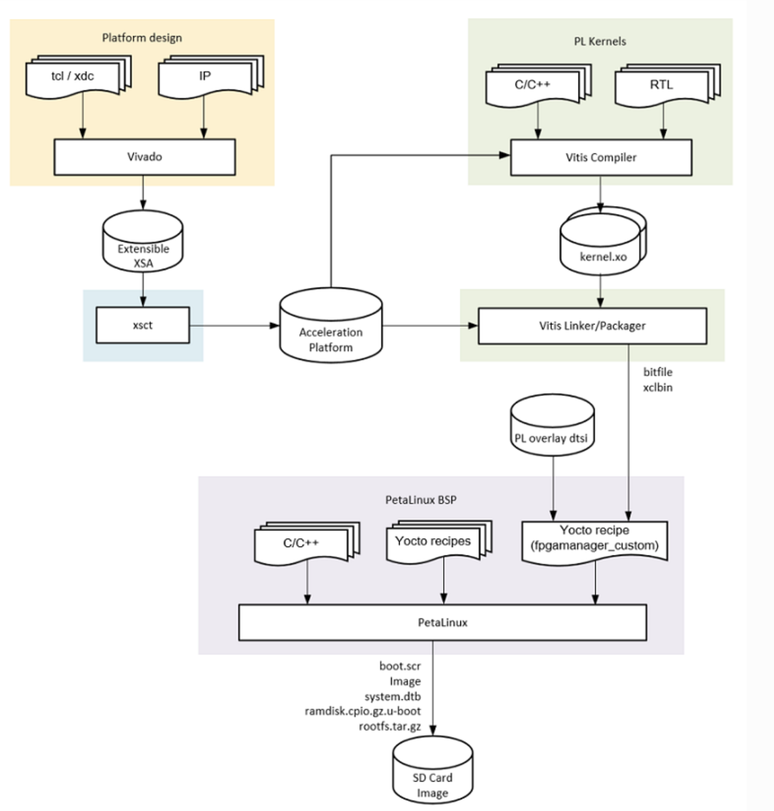
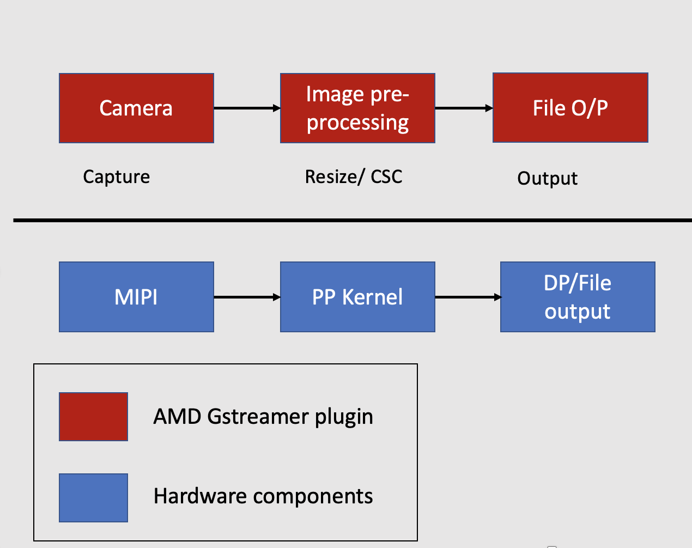

Vitis Acceleration Flow¶
Kria Vitis Acceleration flow overview¶
The K26 SOM is based on the UltraScale+ MPSoC technology, similar to the ZCU104 evaluation board. Vitis tool provides a unified flow for developing FPGA accelerated applications targeted to the Kria edge application. Vitis Embedded Acceleration flow provides software-like development experience on FPGA and SoC, such as real-time reloading applications without rebooting the system. The following graph gives an overview of the Kria Vitis acceleration flow, which is divided into the following steps:
Platform Design : Developing a Vitis extensible platform.
PL kernels : Developing PL Kernel/Overlays using Vitis HLS and Vitis Vision Libraries.
Vitis Linker/Packager : Integrating Vitis extensible platform, PL kernels/overlays to generate bit stream and XCLBIN description.
Petalinux firmware: Application development and integrating it into Petalinux/Ubuntu firmware.
SD Image: Generating an SD image and running the application on the Kria SOM Starter Kit.

Image Resizing Application¶
In this step, we will build an Image resizing Application. The MIPI camera reads an input video of NV12 format, of size 1920x1080 pixels. The pre-processing acceleration kernel converts it to a BGR format and performs a resizing algorithm of user-defined size. The resizing algorithm is built using the Vitis vision library.

Building image resizing applications using the Vitis acceleration flow involves the following steps:
Platform Design : Generate a KV260 Vitis Extensible Platform.
PL kernels : Develop a resizing PL kernel using the Vitis Vision library.
Vitis Linker/Packager : Compile and link the resizing PL kernel/Overlay with the KV260 Vitis extensible platform using the Vitis acceleration flow.
Petalinux firmware : Overview of VVAS Software stack and package the Petalinux firmware with VVAS components
SD Image: Generating an SD image and running the application on the Kria SOM Starter Kit.
KV260 Extensible platform¶
The first step in the Kria Vitis Acceleration platform is to generate a Vitis Extensible platform or XPFM. The Vitis extensible platform (XPFM) allows system designers to quickly develop and iterate the programmable components of the system on top of an available platform. This way, the platform and application development can be designed in parallel. The Vitis extensible platform (XPFM) exposes all the essential Platform Interfaces like Clock, Interrupts, Master AXI interfaces, and Slave AXI interfaces for the accelerator to connect. The Vitis extensible platform(XPFM) is generated from an extensible hardware design (.XSA), which is a container with the hardware specifications like processor configuration properties, peripheral connection information, address map, and device initialization code. In this step, we will use the KV260 starter kit platform to generate a KV260 Vitis extensible platform
Download the Kria starter kit platform¶
Download the Vitis Platform files of KV260 and KR260 on the host computer.
mkdir kria_platform
cd kria_platform
git clone --branch xlnx_rel_v2022.1 --recursive https://github.com/Xilinx/kria-vitis-platforms.git
Build the platform¶
The Image resizing application and smart camera application needs features such as encoder/decoder , Ethernet, HDMI/DP , MIPI support. To support this hardware requirement, we will be using the KV260_ispMIPI platform, as it supports all of the necessary features. Navigate to the KV260 platform and run the following commands. The make command will build the extensible platform XPFM for the KV260_ispMIPI platform. During the build, an extensible hardware XSA is generated. This XSA is used to generate the final Vitis Extensible platform XPFM.
source <vitis path>/settings64.sh
cd kria-vitis-platform/kv260/
make platform PFM=kv260_ispMipiRx_vcu_DP
The generated platform will be located at ./platforms/xilinx_kv260_ispMipiRx_vcu_DP_202210_1/.
ls platform/xilinx_kv260_ispMipiRx_vcu_DP_202210_1/
hw kv260_ispMipiRx_vcu_DP.xpfm sw
Next step¶
The next step is Vitis PL Kernel Development Flow